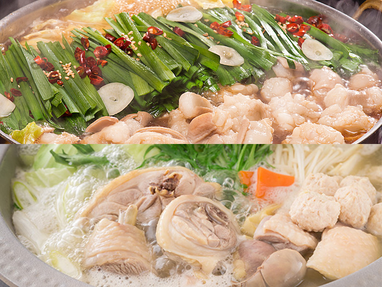
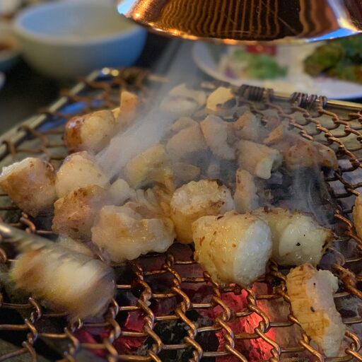

- 먹을 것
- 마실 것
- 어울리는 것
먹을 것
맛있는 음식이 뭐가있을까
모츠나베
쉽게 말해서 일본식 곱창전골. 육수에 소 곱창과 양배추, 부추. 숙주나물, 두부와 같은 재료들을 넣고 끓여서 먹는다. 가게에 따라서는 소 양과 같은 내장이 좀 더 들어가기도 한다. 후쿠오카의 음식을 이야기할 때 하카타라멘과 함께 빠지지 않고 거론되는 음식이다. 후쿠오카 일대를 돌아다녀 보면 모츠나베를 파는 곳이 정말로 정말로 많다. 모츠나베 전문점만이 아니라 큐슈요리 전문점이라면 높은 확률로 메뉴에 모츠나베가 들어 있다. 다만 하카타라멘이 인지도 면이나 전국구급 세력에서는 조금 더 세다.

양대창 구이
양대창이란? 대창은 소의 큰 창자(대장)로서 주로 구이나 전골, 탕으로 이용됩니다. 그냥 대창은 대창부위만을 사용한 것을 말합니다. 남은 음식물로 기름기가 많은 '곱'이 많이 차있는 질 좋은 곱창이라 할 수 있습니다.
